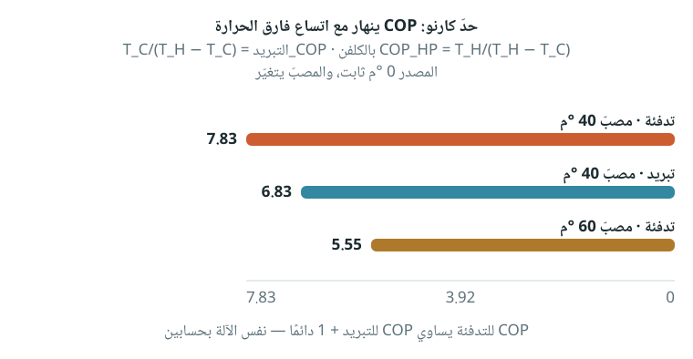

معامل أداء المضخة الحرارية وحدّ كارنو
Heat pump COP and Carnot limit
معامل أداء المضخة الحرارية COP هو نسبة الحرارة المنقولة إلى الشغل المبذول: COP = Q_H/W. وحدّه النظري (كارنو) هو COP_max = T_H/(T_H − T_C). فمضخة ترفع الحرارة من 0 °C إلى 40 °C لها حدّ 313.15/40 = 7.83، لكن الواقعي نحو 3–4. ولهذا يزيد COP كلما قلّ فرق الحرارة.
المضخة الحرارية تنقل الحرارة من مكان بارد إلى آخر دافئ ببذل شغل، وهي تعمل عكس المحرّك الحراري. وحدّ كارنو هو أقصى ما يمكن بلوغه لو كانت العملية عكوسة تماماً. والقيمة الفعلية أقل بكثير بسبب الاحتكاك وفقد الضغط وعدم العكوسية في الضاغط والمبادلات. ولهذا فإن COP ليس رقماً ثابتاً للجهاز بل يعتمد على ظروف التشغيل. مثال: مضخة تعمل بين 0 °C و40 °C: COP_max = 313.15/(313.15 − 273.15) = 313.15/40 = 7.83. ولو رُفعت الحرارة إلى 60 °C لكان COP_max = 333.15/60 = 5.55، أي انخفاض 29%.
كيف تعمل الظاهرة؟
المضخة الحرارية تنقل الحرارة عكس اتجاهها الطبيعي ببذل شغل في الضاغط. فالمائع العامل يتبخر عند الضغط المنخفض فيمتص حرارة من المصدر البارد، ثم يُضغط فترتفع حرارته، ثم يتكثّف فيطلق حرارة إلى المصبّ الدافئ. والحرارة المطلقة عند المصبّ تساوي الحرارة الممتصة من المصدر زائد الشغل المبذول. ولهذا يكون COP أكبر من 1: لأن ما يُسلَّم ليس الشغل بل الشغل زائد الحرارة المستمدة. وحدّ كارنو يأتي من كون الإنتروبيا لا تنقص في أي عملية حقيقية.
العلاقة بالأرقام
COP_HP = Q_H/W، وQ_H = Q_C + W، فـCOP_HP = COP_R + 1. وحدّ كارنو COP_HP,max = T_H/(T_H − T_C). مثال: بين 273.15 و313.15 K: 313.15/40 = 7.83. وكل درجة زيادة في فرق الحرارة تخفض الحدّ: عند فرق 30 K يكون 313.15/30 = 10.4، وعند فرق 50 K يكون 6.26. ولهذا تُصمَّم أنظمة التدفئة بالأرضية عند حرارة منخفضة لترفع COP.
مفاهيم متقاربة
يُفرَّق بين COP والكفاءة: الأولى قد تتجاوز 1 والثانية لا. ويُفرَّق بين COP الفعلي وحدّ كارنو: الأول يقيس جهازاً والثاني سقفاً نظرياً. ويُفرَّق بين COP في التدفئة والتبريد: الأول أعلى بواحد دائماً. وأخيراً يُفرَّد بين COP ومعامل الأداء الموسمي SCOP: الأول عند ظرف محدد، والثاني متوسط على موسم كامل، وهو أقل عادةً.
حدود التطبيق
حدّ كارنو لا يصف جهازاً حقيقياً، فكل ضاغط ومبادل يهدر جزءاً. ولا يصلح عند اقتراب الحرارتين من التساوي حيث يؤول الحدّ إلى ما لا نهاية، وهو غير فيزيائي عملياً. ولا يصف المضخات عند حرارة مصدر منخفضة جداً حيث تتجمد المبادلات. ولا يصف الأنظمة ذات المائع العامل الذي يتحلل عند الحرارة العالية. وأخيراً لا يعطي التكلفة، فـCOP العالي قد يقابله سعر كهرباء أعلى.

| الكمية | القيمة | المصدر |
|---|---|---|
| حدّ كارنو بين 0 و40 °C | 7.83 — | [1] |
| حدّ كارنو بين 0 و60 °C | 5.55 — | [1] |
| فرق COP بين التدفئة والتبريد | 1.0 — | [1] |
المصادر
- 1 CODATA Value: Boltzmann constant — NIST — CODATA 2022 recommended values (2024). physics.nist.gov/cgi-bin/cuu/Value?k · اطُّلع عليه 2026-11-22
- 2 Specific Heat Capacity of Water: Temperature-Dependent Data and Calculator — The Engineering ToolBox (2026). www.engineeringtoolbox.com/specific-heat-capacity-water-d_660.html · اطُّلع عليه 2026-11-22
استشهد بهذا المصطلح
الصيغتان مبنيتان من بيانات الصفحة نفسها: العنوان والتاريخ ورابط النسخة المنشورة.
معامل أداء المضخة الحرارية وحدّ كارنو — Heat pump COP and Carnot limit. (2026). ديوان المعرفة — انفراد. https://infiradev.com/diwan/terms/term-heat-pump-cop-carnot.html
@misc{term-heat-pump-cop-carnot2026,
title = {معامل أداء المضخة الحرارية وحدّ كارنو},
titleaddon = {Heat pump COP and Carnot limit},
howpublished = {{ديوان المعرفة — انفراد} — مرجع علمي عربي},
year = {2026},
url = {https://infiradev.com/diwan/terms/term-heat-pump-cop-carnot.html},
urldate = {2026-11-22},
note = {مراجعة علمية: تحرير انفراد الآلي — نُشر بأمر عبدالله الهويدي}
}
راجعه: تحرير انفراد الآلي — نُشر بأمر عبدالله الهويدي · 2026-11-22 · آخر تحديث 2026-11-22